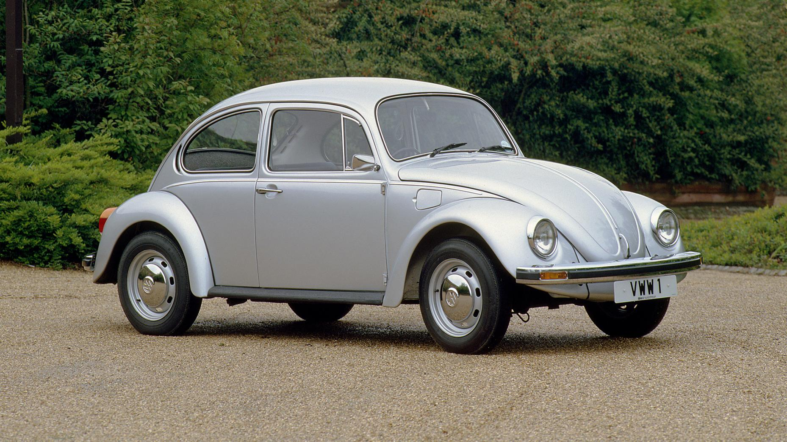

Compact cars
-

- VW Beetle
- Austin Mini
- Ford GT40
- Nissan Qashqai
For being Europe’s Model T.
It put millions of ordinary citizens on the road, and inspired the rear-engine layout of Porsche’s later 911.
| Engine | Power output | Top speed | 0-60 Miles/hour |
|---|---|---|---|
| 1200 cc H4 | 40hp | 100 mph | 23 sec |
For being tiny and good
Small cars were nothing new when the Mini came out, but none were as cleverly designed - think transversely mounted engine and front-wheel-drive for max cabin space - and none had the little Brit’s charisma. And it won the Monte Carlo Rally…
| Engine | Power output | Top speed | 0-60 Miles/hour |
|---|---|---|---|
| 970 cc | 55 hp | 72.4 mph | 27.1 sec |

For bringing power to the people
It bought style and performance to the people. In the first six months it became the fastest-selling car in history, and by 18 months over a million had been built. That was in 1964… and now, it’s in the UK in right-hand-drive. Good.
| Engine | Power output | Top speed | 0-60 Miles/hour |
|---|---|---|---|
| V8 engine | 210 hp | 140 mph | 8.2 sec |
For inventing crossovers
There was a much simpler time when a saloon was a saloon and a hatchback a hatchback. Then the Qashqai came along and suddenly everything borrowed a bit of everything else, and the global carscape changed forever. Probably for the better.
| Engine | Power output | Top speed | 0-60 Miles/hour |
|---|---|---|---|
| 1.6 L R9M I4 (diesel) | 148hp | 117mph | 11.3 sec |